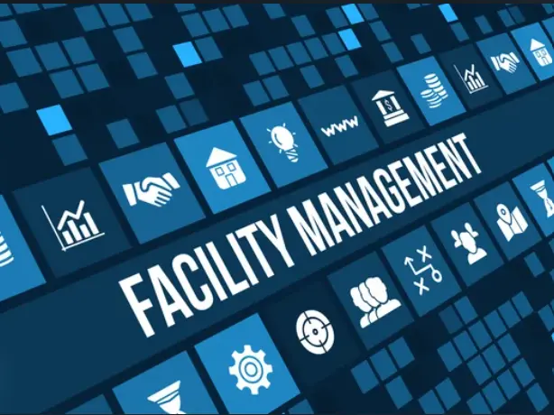
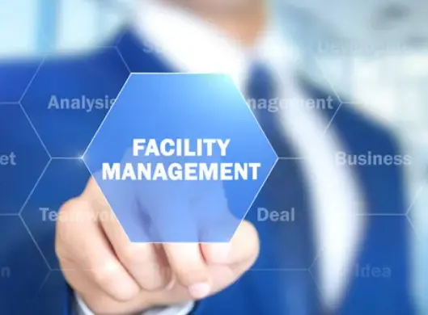

What is Facility Management?
Facility or facilities management (FM) is a profession dedicated to supporting people. It ensures the functionality, comfort, safety, sustainability and efficiency of the built environment - the buildings we live and work in and their surrounding infrastructure.
"Facility Management is an organizational function which integrates people, place and process within the built environment with the purpose of improving the quality of life of people and the productivity of the core business".
This combination of job responsibilities supports the operations of each organization to create an environment where the systems work together seamlessly, from the parking lot to the executive suite. Facility managers are the people who make sure we have the safest and best experience possible, by coordinating the processes that make the built environment succeed.
(Source: ifma.org)
Why is Facility Management relevant?
The FM industry is growing rapidly, and the COVID-19 pandemic made safety and health a top priority. Changes to technology, green initiatives and other current trends are changing how FM teams conduct business and respond to everyday challenges. Facility managers are a crucial part of every organization because they ensure that the places where we work, play and live are safe, comfortable, sustainable and efficient. Facility managers contribute to an organization's strategy and bottom line in a variety of ways.
- Contribute to operational efficiencies
- Plan and deliver infrastructure needs to support productivity
- Manage risks including those to facilities, employees, suppliers and business reputation
- Mitigate and reduce environmental impact
- Promote sustainable tactics for long-term cost management
- Leverage technological solutions
- Mitigate and overcome effects of natural disasters
- Guarantee compliance
- Leverage security
(Source: ifma.org)
How can we help our clients?
At M&M Facilities Management, we understand that maintaining a safe, efficient, and productive environment is crucial for any organization. Our comprehensive facility management services are designed to meet the unique needs of your business, ensuring your facilities are managed to the highest standards. Here's how we can help you:
Maintenance Services
- Preventive Maintenance: Regularly scheduled maintenance to prevent equipment failures and extend the life of your assets.
- Reactive Maintenance: Prompt response to unexpected issues, minimizing downtime and operational disruption.
- Predictive Maintenance: Using advanced technologies to predict potential failures before they occur, optimizing maintenance schedules and reducing costs.
Facility Operations
- Building Management: Comprehensive management of all building systems, including HVAC, plumbing, electrical, and more.
- Space Management: Optimizing the use of space within your facility to enhance productivity and employee satisfaction.
- Cleaning and Janitorial Services: Maintaining a clean and hygienic environment for your employees and visitors.
Energy Management
- Energy Audits: Identifying opportunities for energy savings and implementing solutions to reduce energy consumption and costs.
- Sustainable Practices: Implementing green initiatives to minimize your environmental impact and promote sustainability.
- Utility Management: Monitoring and managing utility usage to ensure cost-effectiveness and efficiency.
Safety and Security
- Security Services: Providing trained security personnel, surveillance systems, and access control to protect your facility.
- Health and Safety Compliance: Ensuring your facility complies with all health and safety regulations, reducing the risk of accidents and liability.
- Emergency Preparedness: Developing and implementing emergency response plans to protect your employees and assets in case of a crisis.
Project Management
- Renovations and Upgrades: Managing facility renovation projects from start to finish, ensuring minimal disruption to your operations.
- Construction Management: Overseeing construction projects to ensure they are completed on time, within budget, and to your specifications.
- Move Management: Coordinating office relocations to ensure a smooth and efficient transition.
Technology Integration
- Smart Building Solutions: Implementing IoT and other advanced technologies to enhance building performance and efficiency.
- Facility Management Software: Providing cutting-edge software solutions to streamline facility management processes and improve transparency.
- Data Analytics: Leveraging data to make informed decisions about facility operations and maintenance.
Why Choose M&M Facilities Management?
- Expertise: Our team of experienced professionals has the knowledge and skills to manage all aspects of your facility.
- Customization: We tailor our services to meet the specific needs of your business, ensuring optimal results.
- Reliability: We are committed to providing reliable, high-quality services that you can count on.
- Cost-Effectiveness: Our solutions are designed to improve efficiency and reduce costs, delivering value for your investment.
- Customer Satisfaction: We prioritize customer satisfaction and work closely with you to ensure your needs are met.
At M&M Facilities Management, we are dedicated to helping you create a safe, efficient, and productive environment. Let us handle the complexities of facility management so you can focus on what you do best - running your business.